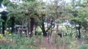
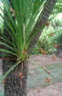
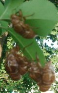
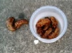

チョー暑かった７月の話。前にコラムった空蝉（うつせみ）の森（σ(-_-)が勝っ手につけた名前）の前を久しぶりで通りかかった。

例によって セミの合唱がわんわん聞こえてくる。急ぐ用事でもなかったので、（相変わらずすごいな....）と思いつつ車を降りた。仲に入って そこかしこの立木をみると、セミの抜け殻がいっぱいついている。この木なんか、まるで抜け殻が花のつぼみかと思われるような状態。

こっちの木では１，２枚の葉っぱに抜け殻が密集、まるでセミ団地。

しばらくセミしぐれを堪能してから、公園を後にした。
帰りの夕ぐれ、また同じ公園の前を通りかかった。すると一人の若い女性が 公園内の立木のそばにかがみ込んで、しきりに地面を模索している。
なんか興味が湧き、車を降りて「何をしているのか」と聞いてみた。すると困ったような顔をして、持っている小さなガラスビンをさしだした。見ると、中にはもぞもぞ動くセミの幼虫が５，６匹。
（ふ〜ん、セミの幼虫を捕っているのか....）
やってることは分かったが、なんでそんなに沢山 捕っているのか分からない。そこで「どうしてこんなに捕るの？」と問いかけたところ、困ったような顔をして首を振る。意味が分からなかったと思ってもう一度聞くと、なにやら外国語で返事があった。どうやら中国語らしかったので、ブロークンな中国語で「ニーメン ツォンコーリェン？」（あなたは中国人か？）などと適当に云ってみた。すると うれしそうに「ニー ○＊△※▼ プートンファ？」
どうやら「中国語が話せるのか？」と云ってるらしい。そこで「う〜ん....ア リトル、いや シャオシャオ....」と訳の分からない返事をしてから、 中国語と日本語と英語のチャンポンで しばらくしゃべった。
以下要約すると彼女は山東省出身、来日して半年くらい。まだ日本語がよく分からない。友達数人と ここから３公里（３km）ほど離れた工場で働いている。ここへは自行車（ツーシンチャ＝自転車）できた という。そこで改めて何をしているのかと聞くと、「セミの幼虫を捕りに来た。唐揚げにすると大変おいしい」
ヘェ〜と思ったので、「中国では、みんなセミの唐揚げを食べるのか」と聞くと、「みんなが食べるわけではない。食べる人と食べない人がいる。でも私は大好き」
（ふ〜ん、そうなのか...） .一応 わけは分かったし、.別にセミの幼虫は捕獲禁止ではない。第一、あまり人が来ないような街はずれの公園なので、捕っても別に怒る人はいない。
しかし日本人には食べない。そこで公園近くの日本人に知られたとき、ヘンに思われるかも知れない。
そう云うと、「分かりました。もう止めます」
「でも いままで捕ったのは せっかくなので持って帰ったら....」
すると
「謝々、では いまから帰って唐揚げを作って すぐ戻てきます。食べてみてください」
「....いや、σ(-_-)は食べたいと思わない(>_<)....それにσ(-_-)はこの近くに住んでない。今天（今日）はたまたま通りかかっただけだけだし...」
「唐揚げ、おいしいよ。では明天（明日） 来るか？」
「いや、明天もダメ....」
しかしどうしても唐揚げをご馳走したいという。σ(-_-)も少し興味が湧いてきたので、３日後の同じ時間に ここで逢って唐揚げを少しもらうことにした。ということで、思いがけず中国娘とデートの約束。(^-^；
３日後、約束の場所に行くと、しばらくして彼女もきた。さっそく うれしそうに今度はプラスチックのビンに入った唐揚げをさし出した。

油揚げにしてあると云っても、セミの幼虫はもともと油色。それを揚げただけなので、生きているときと姿や色ががまったく同じ。それを食べろと云われても、なんだか気持ち悪い(>_<)
「先に食べてみてくれ」と云ったら、一つ つまんでおいしそうにバリボリ。
食べながら、「頭より腹の方がおいしいよ」
う〜む....
覚悟を決めて一つ 取り上げ、おそるおそる腹の方からかじってみた....はむはむ くしゃくしゃ....なんだか苦い....油っぽい....いがらっぽい....おいしくない....(ノд｀)
とにかく一匹 完食....もっと食べてみろと云われたが、もう いらね....
せっかくのご馳走ではあったけど、残りは持って帰ってもらった。
きっと今頃は、彼女の腹の中。
|